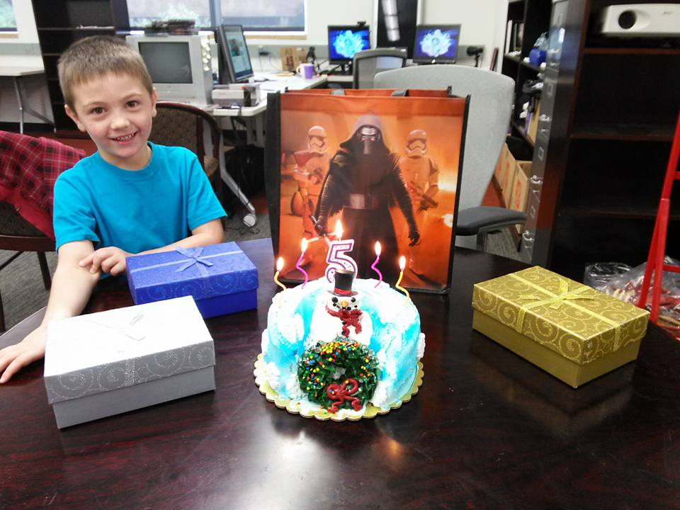
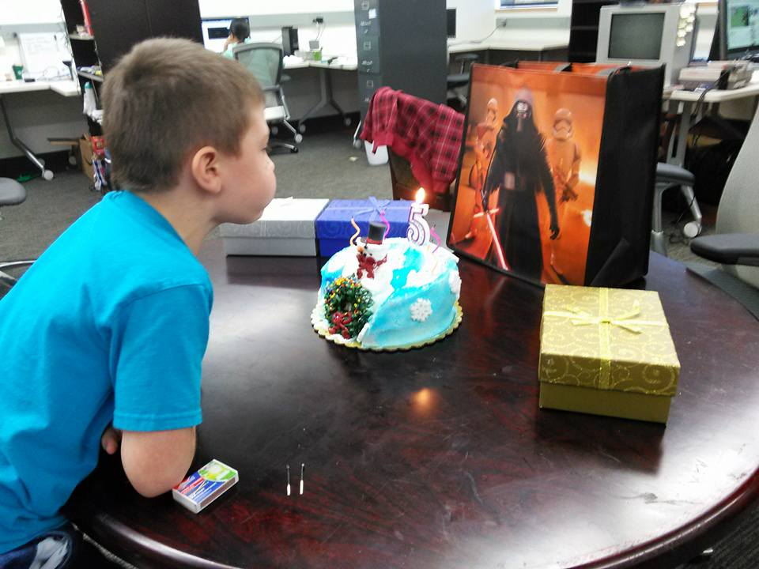
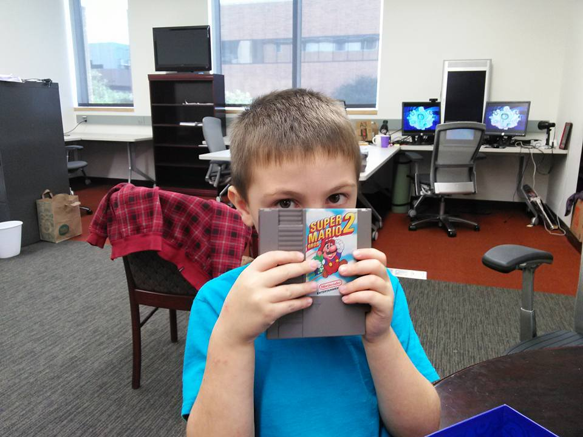
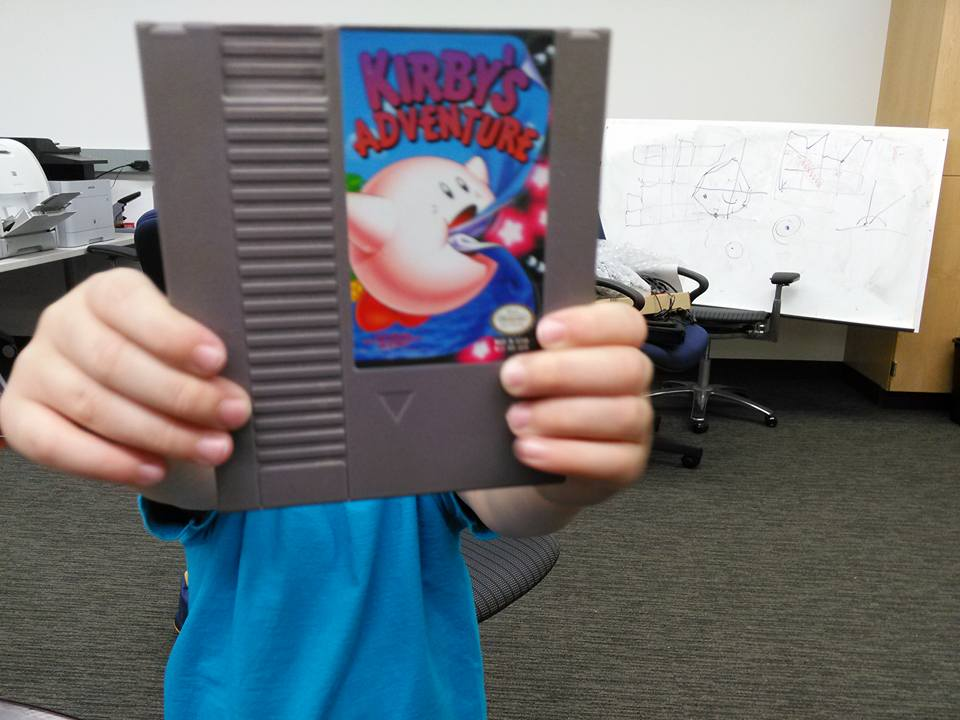
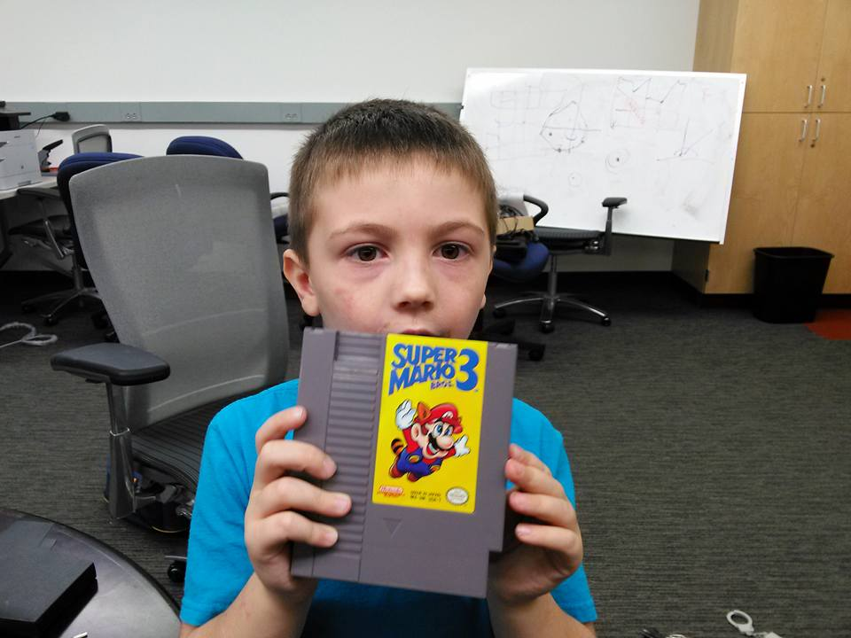
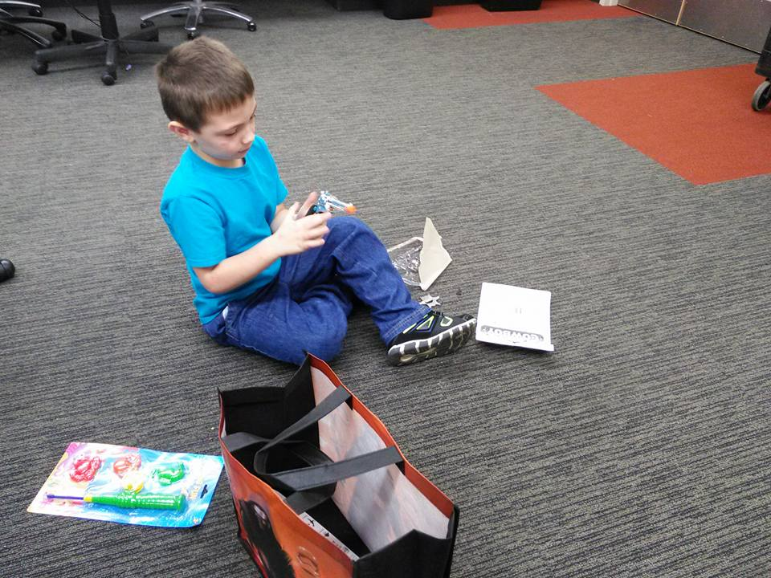

Mobile uploads Mobile uploads Mobile uploads Mobile uploads ...
TL;DR
- Date: November 24, 2016 (originally shared) — 9 years ago
- Occasion: Jack's 5th birthday, where he chose his own cake and began gaming with his father
- Activity: Mark Havens set up a home lab with retro gaming systems for his son
- Legacy: Jack, now 14, still loves playing retro games nine years later
- Theme: Nostalgic family bonding through classic gaming across generations

Mobile uploads

Mobile uploads

Mobile uploads

Mobile uploads

Mobile uploads

Mobile uploads
9 Years Ago
Mark Havens added 6 new photos.
Nov 24, 2016 10:50:25 am
Jack turned 5 on Monday. He picked out his own cake, and is gaming old school with his old man this year.
9 years ago.
He's 14 now.
I took him to my lab all the time.
That's where these pictures were taken.
I set up retro gaming systems for him to play on.
And he got retro games for his birthday.
And he still loves to play them... 9 years later.
He's 14 now.
I took him to my lab all the time.
That's where these pictures were taken.
I set up retro gaming systems for him to play on.
And he got retro games for his birthday.
And he still loves to play them... 9 years later.
Updated Nov 25, 2025 7:30:02 am